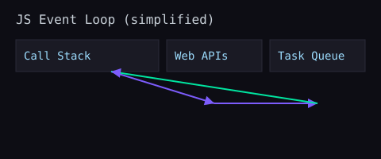

How JavaScript Runs
JavaScript is single‑threaded with an event loop. The engine parses, compiles, and executes your code, delegating async tasks (timers, fetch) to the browser or Node environment, which later queues callbacks for the main thread.
Call stack, tasks, and microtasks
console.log('A');
queueMicrotask(() => console.log('microtask'));
setTimeout(() => console.log('timeout'), 0);
console.log('B');
// Order: A, B, microtask, timeout
- Macrotasks: setTimeout, setInterval, I/O callbacks
- Microtasks: Promise.then, queueMicrotask, MutationObserver
- Microtasks run after the current call stack, before the next macrotask
Rendering pipeline
- DOM: the structured representation of HTML
- CSSOM: computed styles
- Layout → Paint → Composite: visual rendering pipeline
- Animating with CSS transforms often avoids layout (smoother)

DevTools essentials
console.group('Fetch user');
console.time('user');
try {
const res = await fetch('/api/user');
console.assert(res.ok, 'Response not OK');
const data = await res.json();
console.table(data);
} finally {
console.timeEnd('user');
console.groupEnd();
}
- Use the Sources panel to set breakpoints and watch expressions.
- Performance panel: record, find long tasks (>50ms), and analyze flame charts.
- Network panel: view waterfalls, headers, and caching.
Exercises
- Open DevTools and inspect the call stack as you step through a function chain.
- Build a microtask/macrotask ordering demo and explain why the order occurs.
- Measure a layout‑heavy operation with
console.time and optimize it by batching DOM writes.
Tip: Learn to read stack traces; they are your fastest route to a fix. Keep logs grouped and timed for quick triage.
Suggested Reading
- Jake Archibald: In The Loop
- MDN: Concurrency model and Event Loop
- MDN: Performance API
Practice Project
- Schedule
Promise.then, queueMicrotask, and setTimeout in different orders and log their execution.
- Profile a long task and break it into chunks using
requestIdleCallback or queueMicrotask.